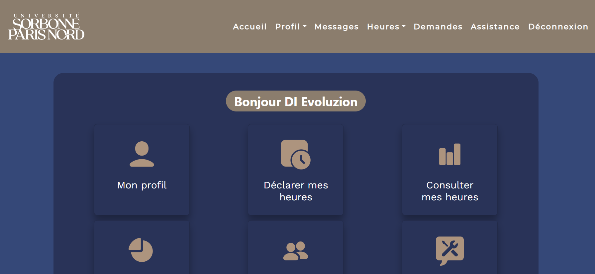

Ce site Voir en ligne a été développé pour l'IUT afin que les membres de l'IUT puissent se connecter. Les enseignants et les secrétaires peuvent voir leurs heures, déclarer des heures supplémentaires et consulter les données de l'IUT. Les membres de la direction peuvent ajouter et retirer l'accès aux personnes.
